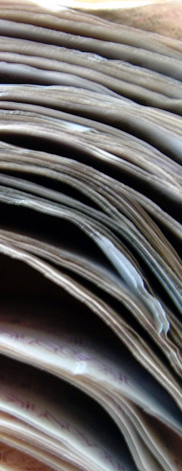
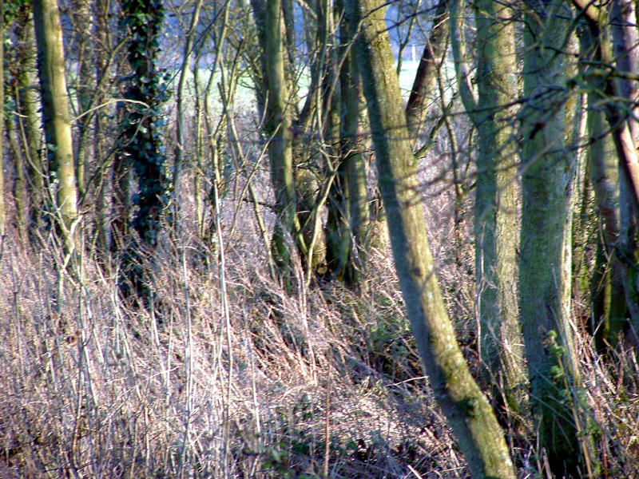

|
  |
It doesn't grow on trees. How much do you think
is there? Answers in book. Then I went to look at the trails. Some nuts
stuff going on. The moon was is very bright so its easy to dig when the sun has gone down. Sittingbourne jam - king of unreal, was today. Vert wall to spine transfer and window rides apparently. |